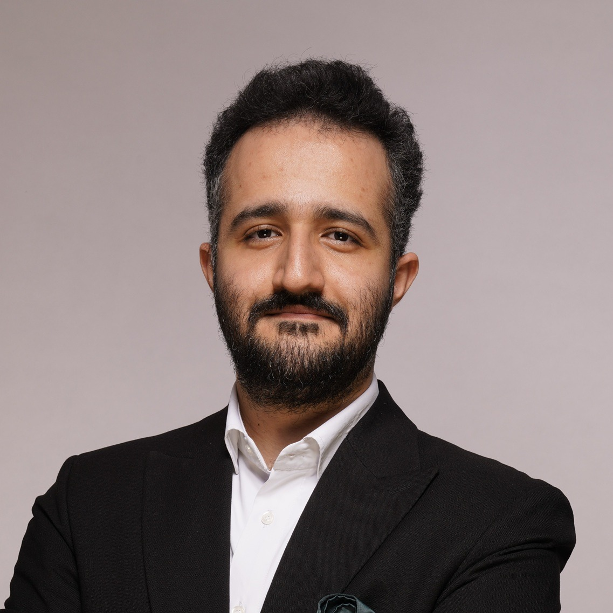

۰۱
کسبوکار
چطور رشد کنیم؟ چطور مزیت بسازیم؟ و چرا بعضی کسبوکارها در یک نقطه متوقف میشوند؟
مسئلههای کسبوکار، تصمیمهای سخت، ایدههای نصفهنیمه و چیزهایی که «باید یک فکری به حالشان کرد».
اینجا درباره کسبوکار، مدیریت، تفکر و رشد فردی فکر میکنم؛ و تجربهها و چیزهایی را که یاد میگیرم با دیگران به اشتراک میگذارم.

من بیشتر از جوابهای آماده، به سؤالهای خوب علاقه دارم. این چهار حوزه، جاهایی هستند که بیشتر وقتم را در آنها صرف فکر کردن و یاد گرفتن میکنم.
چطور رشد کنیم؟ چطور مزیت بسازیم؟ و چرا بعضی کسبوکارها در یک نقطه متوقف میشوند؟
چطور یک سازمان بهتر کار میکند؟ از استراتژی و ساختار تا آدمها و سیستمهای مدیریتی.
چطور بهتر فکر کنیم، تصمیم بگیریم، مسئله را بشناسیم و گرفتار جوابهای ساده نشویم؟
مسیر دانشگاهیام در مقطع کارشناسی و کارشناسی ارشد از مهندسی صنایع شکل گرفت؛ رشتهای که از همان ابتدا من را با نگاه سیستمی و حل مسئله درگیر کرد.
وارد دنیای مشاوره شدم و مسیرم را از سطوح پایینتر شروع کردم؛ از تحلیل و اجرا تا مواجهه مستقیم با مسائل واقعی سازمانها.
امروز تمرکزم روی کمک به مدیران و کسبوکارها در مسائل استراتژی، تحول سازمانی، توسعه کسبوکار و ساخت سیستمهای مدیریتی است.
در مشاوره، برای من مهم است که خروجی فقط یک فایل یا ارائه نباشد؛ مسئله باید به تصمیم، سیستم و اقدام تبدیل شود.
از بازطراحی ساختار و فرایند تا ساخت سیستمهای مدیریتی و تبدیل استراتژی به اجرا.
پیدا کردن فرصتهای رشد، بهبود فروش، توسعه بازار و طراحی مسیرهای جدید کسبوکار.
باز کردن مسائل پیچیده و تبدیل آنها به چند تصمیم روشن و قابل اقدام.
طراحی سازوکارهایی برای هدفگذاری، عملکرد، جلسات، KPI، OKR و مدیریت روزمره.
کتاب میخوانم، کیسهای کسبوکار را بررسی میکنم، ابزارهای جدید را امتحان میکنم و درباره چیزهایی که یاد میگیرم مینویسم و حرف میزنم.
از کتابهای مدیریت و استراتژی تا تفکر انتقادی و رشد فردی؛ ایدههایی که ارزش فکر کردن دارند.
آنچه در پروژهها و مواجهه با مدیران و سازمانها میبینم؛ بدون فاصله گرفتن از واقعیت اجرا.
از AI و ابزارهای جدید تا ایدههای شخصی؛ ترجیح میدهم بعضی چیزها را بهجای فقط خواندن، بسازم.
اگر مسئلهای در کسبوکارتان دارید که ارزش فکر کردن و حل کردن دارد، میتوانیم دربارهاش صحبت کنیم.